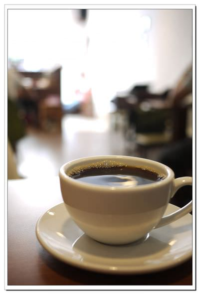
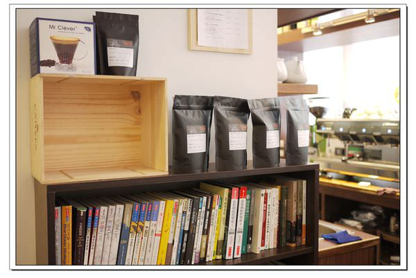

榮景 Rong Jing Coffee Roasters


這家是老闆clon的第二家店, 另一家店叫piccolo, 老闆也是台大研所畢業的大學長唷, 人看起來超年輕的, 很不像是三十幾歲的大叔XDD 老闆開了二店之後, 平日都會待在二店這裡, 那一塊算是剛開發的地方, clon看好這裡的發展, 就先在這裡開店營業了XD 目前的烘豆作業主要都在這裡進行~ 這家店的咖啡豆也很便宜, 大多也滿有特色的, 小編也很愛這裡的義式豆唷~ 以前在練拿鐵拉花的時候都會一次進個1KG回來呢。 因為地點滿偏僻的~ 如果覺得太遠, 也可以去Piccolo坐坐XD